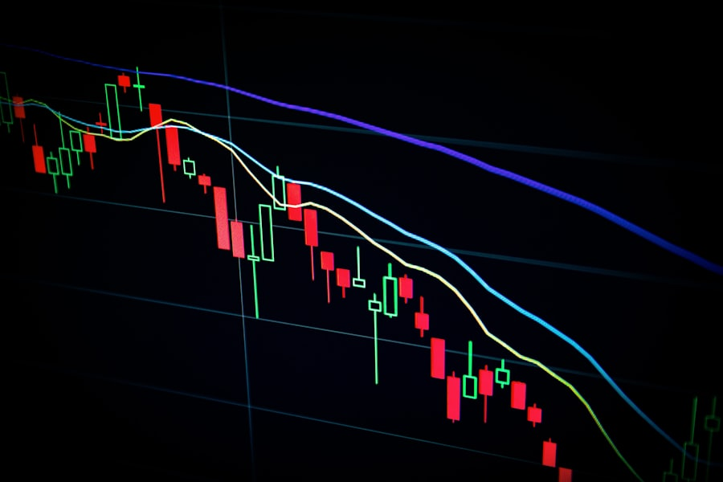

Will the US government shut down before March 1, 2027?
Funding talks have stalled twice this quarter, but past deadlines settled late.
A tactile alternative to Harbor: graphite paper, matte brass, and real depth. The header frames the content like a case; every zone is an embossed panel with an inset brass edge and a notched corner; cards float. Green and red stay reserved for YES / NO.
Space Grotesk carries the voice; DM Sans and IBM Plex Mono do the reading and the numbers. Warm off-white on graphite, never pure white.
Funding talks have stalled twice this quarter, but past deadlines settled late.
Derived from the brand plate in concept/brand-toolkit/. The live colour layer for the feed is ui-visual/_theme.css on event-feed.html.

The market
Predict Marketdecides.
Opinions
have value.